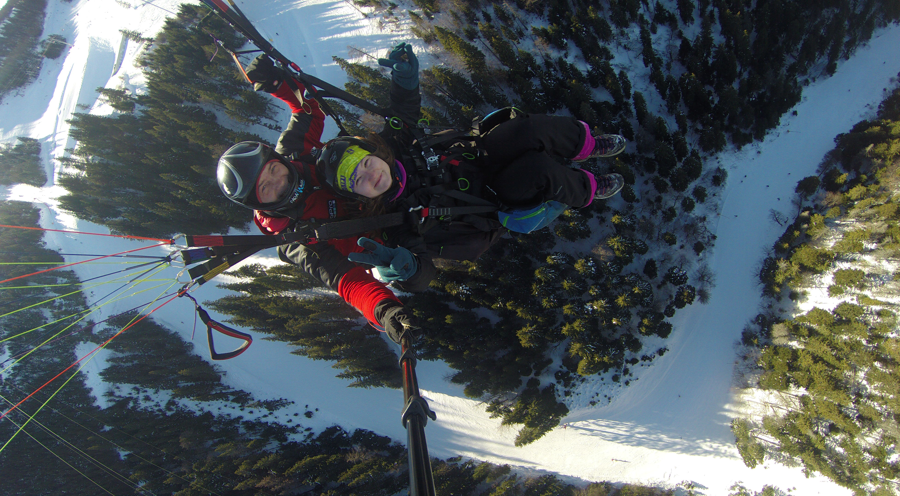
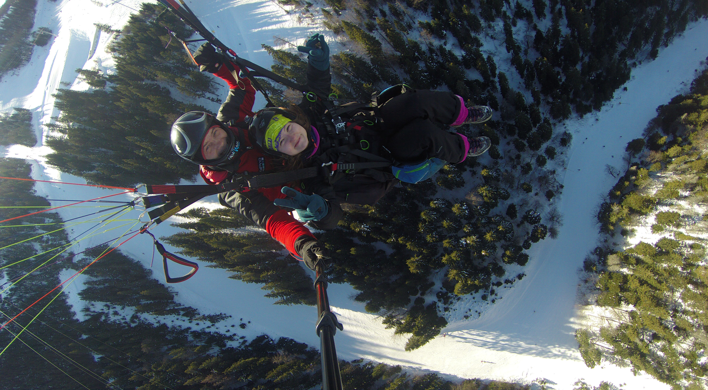
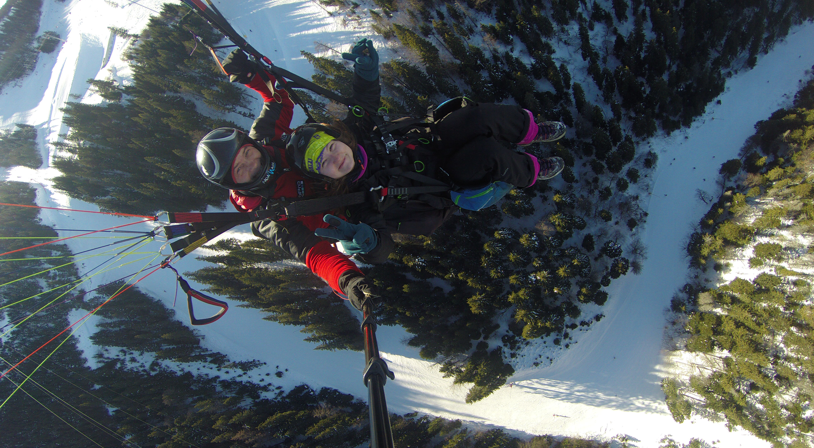

Recomand cu drag zbor tandem cu parapanta cu cei de la Paramania, cu decolare de pe Vf Bunloc (1200m) vara si cu decolare de pe Vf. Postavarul(1800m) iarna.
Zborul dureaza aproximativ 10-25 minute in functie de conditiile meteo.
Este o experienta de neratat!

De asemenea, recomand jocul de mai jos daca esti fan strategie-fantezie.
Cand eram la liceu, ma jucam destul de des acest joc "Heroes 3" si imi placeau in special misiunile din campagnie, desi nu cred ca le-am terminat vreodata.
Daca ar fi sa aleg un joc din "tinerete", cu siguranta "Heroes 3" ar fi in TOP 3.
Revenind la zborul tandem cu parapanta, Paramania ofera si cursuri. Puteti sa aflati mai multe detalii, intrand pe site-ul lor: Paramania.ro
Daca vreti o schimbare de cariera sau pur si simplu, vreti sa aflati lucruri noi despre zona IT, recomand cursurile despre programare tinute de Ovidiu Rudi, trainer IT profesionist de peste 4 ani si cu experienta in domeniu de peste 11 ani. Pentru mai multe detalii, accesati urmatoarele:
Mai departe, as vrea sa va prezint o reteta foarte gustoasa si chiar usor de preparat: ciuperci cu legume si cascaval la cuptor.
Aveti nevoie de urmatoarele ingrediente, dar fara a va limita la ele(puteti sa puneti orice legume va plac):
„Inceteaza sa faci ceea ce ai facut pana acum. Ia-ti o pauza si lamureste-te ce functioneaza si ce nu. Definitia nebuniei este sa faci mereu acelasi lucru asteptand rezultate diferite."
„Dimensiunea succesului tau este masurata de puterea dorintei tale, de marimea visului tau si de cum gestionezi dezamagirile pe drumul catre succes.”
„Singura diferenta dintre o persoana bogata si una saraca este maniera in care isi utilizeaza timpul”